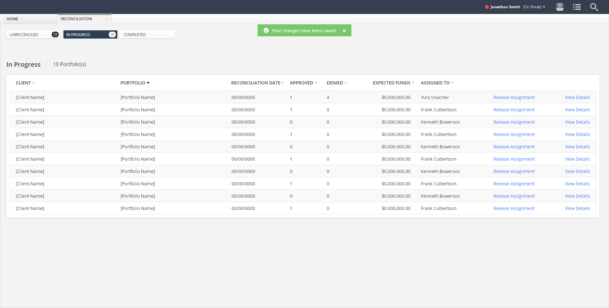
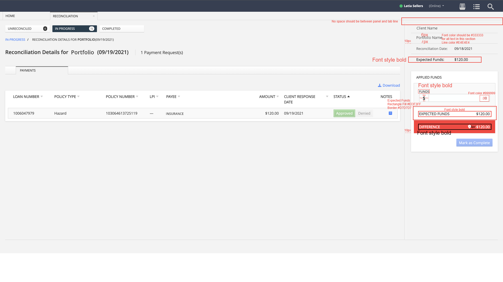

The Scope: UX Strategy and Research
Our team works by a three-week sprint process. I would refer to Azure DevOps to see any stories assigned to me by the delivery manager or business analyst for the upcoming sprint. At the end of each sprint, we hold preplanning and planning meetings to review designs and confirm we are ready for the upcoming sprint. As the sprint begins, we hold a sprint retrospective to review what went well, what did not, and what could be improved from the last sprint.
The Surface: Creating the Mockups

In Progress Reconciliations - Release Assignment Successful
Designs need to be completed before a sprint begins so the developers know what to work on during the sprint. The Lead UX Designer and I review stories in Azure DevOps to track what designs are needed in the upcoming sprint and get to work. I attend multiple elaboration meetings for both the Upgrade and any new functionality work needed by the 10 other teams on the project, where the Delivery Manager (client-side), Business Analyst (client-side), Subject Matter Expert (client-side), Lead Developer(client-side) and myself (Neudesic resource) discuss and determine Conditions of Acceptance (COAs). COAs are usually roughly drawn out before each meeting by the Business Analyst. If wires are ready before the meeting, it is reviewed by the team. Development effort always comes into play for every design decision made. I used Microsoft Excel to track COAs and made sure I am not missing any crucial details discussed. I created the mockups, annotating any changes that QAs need to test during development. If the team preferred a direction that I felt would not be beneficial for the user, I would create multiple options of the design and present these designs to the team. I would note and explain how each design addressed the problem differently, and what any possible issues each could incur. This process helped me determine whether my assumption was correct and helped the team visualize if this idea would work. By getting real examples of my own ideas, as well as the team’s, I was able to reach an unbiased decision on what design worked best with the team. In the end, it helped us come to a consensus and determine the best course of action. After multiple meetings and iterations of the designs, the story’s COAs were finalized by the Product Owner(client-side) and moved to ready for the next sprint. As any changes occurred, I would update the style guide for this project, which is saved on the client’s server.
UX Review

In Progress Reconciliation Details - UX Review
As features are completed, my team and I review what has been developed and if it aligns with the mockups. I create an XD file per story, with screenshots of the developed product, redlining what needs to be updated and sending it back to the Delivery Manager so that she can send it over to the development team. If a bug is found, the Delivery Manager creates a story for it so that it can be addressed.
User Testing
This project has dealt with scope creep due to clients’ evolving business decisions and developed solutions not matching the designs made over the years, leading to overspending. Since the client does not believe they have the budget to spend on user research and testing, our work ends after designs are developed. If possible, our team would conduct usability tests to confirm designs meet users’ needs.